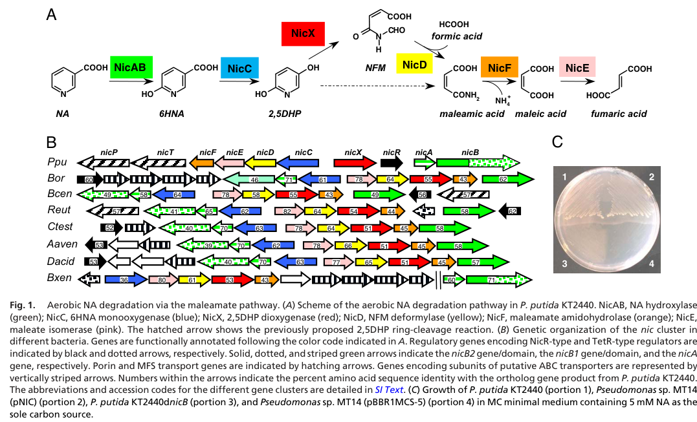

nicF (PP_3941, UniProt Q88FY5) encodes maleamate amidohydrolase (EC 3.5.1.107), a metal-independent cysteine amidase of the isochorismatase superfamily. NicF hydrolyzes maleamate (maleamic acid) to maleate (maleic acid) plus ammonia, the nitrogen-removing step in the maleamate route of aerobic nicotinate (nicotinic acid) degradation in Pseudomonas putida KT2440. It acts downstream of NicD and upstream of NicE (maleate isomerase), which converts maleate to fumarate for entry into central metabolism. NicF is a soluble, intracellular catabolic enzyme encoded within the chromosomal nic gene cluster.
Definition: Catalysis of the reaction maleamate + H2O = maleate + NH4(+).
Justification: NicF has a characterized EC 3.5.1.107 substrate-level reaction in nicotinate catabolism, while the current GO annotation can only use the broader linear-amide hydrolase parent.
Parent term: hydrolase activity, acting on carbon-nitrogen (but not peptide) bonds, in linear amides
Supporting Evidence:
| GO Term | Evidence | Action | Reason |
|---|---|---|---|
|
GO:1901848
nicotinate catabolic process
|
IDA
PMID:18678916 Deciphering the genetic determinants for aerobic nicotinic a... |
ACCEPT |
Summary: Nicotinate catabolic process is the correct pathway annotation for NicF.
Reason: NicF is the maleamate amidase in the characterized KT2440 nicotinate degradation cluster, acting downstream of NicD and upstream of NicE. The falcon deep research reaffirms the explicit placement of nicF in the aerobic nicotinate (maleamate) pathway and its required role for complete catabolism of nicotinate.
Supporting Evidence:
file:PSEPK/nicF/nicF-uniprot.txt
aerobic nicotinate degradation pathway
file:PSEPK/nicF/nicF-goa.tsv
GO:1901848 nicotinate catabolic process
PMID:18678916
responsible for the aerobic NA degradation
file:PSEPK/nicF/nicF-deep-research-falcon.md
NicF acts in the **maleamate pathway** of aerobic nicotinic acid degradation, downstream of NicC/NicX/NicD and upstream of **NicE** (maleate isomerase), which converts maleate to fumarate.
|
|
GO:0016811
hydrolase activity, acting on carbon-nitrogen (but not peptide) bonds, in linear amides
|
IDA
PMID:18678916 Deciphering the genetic determinants for aerobic nicotinic a... |
ACCEPT |
Summary: The broad linear-amide hydrolase term captures the current GO molecular-function support for NicF.
Reason: NicF hydrolyzes maleamate to maleate and ammonium; GO lacks a substrate-specific maleamate amidohydrolase term, so this parent is currently appropriate. The falcon deep research adds quantitative biochemical support (crude-extract specific activity of 19.3 umol/min/mg with an NH4+-coupled assay) and mechanistic context (isochorismatase-superfamily, metal-independent cysteine amidase with a Cys-Asp-Lys triad), all consistent with a linear-amide C-N hydrolase.
Supporting Evidence:
file:PSEPK/nicF/nicF-uniprot.txt
Maleamate amidase that transforms maleamate into maleate
file:PSEPK/nicF/nicF-uniprot.txt
Reaction=maleamate + H2O = maleate + NH4(+)
file:PSEPK/nicF/nicF-goa.tsv
GO:0016811 hydrolase activity
file:PSEPK/nicF/nicF-deep-research-falcon.md
NicF is the maleamate (maleamic acid) amidohydrolase** of the *P. putida* KT2440 nicotinate degradation pathway, catalyzing hydrolysis of **maleamate/maleamic acid** to **maleate/maleic acid plus ammonia (NH3/NH4+)**
file:PSEPK/nicF/nicF-deep-research-falcon.md
NicF in KT2440 is predicted and supported to belong to the **isochorismatase superfamily**, which includes cysteine-dependent amide/ester hydrolases often featuring a **Cys–Asp–Lys** catalytic triad.
|
Q: Should GO add a substrate-specific maleamate amidohydrolase molecular-function term for NicF-family enzymes?
Experiment: Measure NicF kinetics on maleamate and related amides, and test rescue of nicF mutant growth on nicotinate.
Type: enzyme kinetics and complementation assay
The research report should be a detailed narrative explaining the function, biological processes, and localization of the gene product. Citations should be given for all claims.
You should prioritize authoritative reviews and primary scientific literature when conducting research. You can supplement
this with annotations you find in gene/protein databases, but these can be outdated or inaccurate.
We are specifically interested in the primary function of the gene - for enzymes, what reaction is catalyzed, and what is the substrate specificity? For transporters, what is the substrate? For structural proteins or adapters, what is the broader structural role? For signaling molecules, what is the role in the pathway.
We are interested in where in or outside the cell the gene product carries out its function.
We are also interested in the signaling or biochemical pathways in which the gene functions. We are less interested in broad pleiotropic effects, except where these elucidate the precise role.
Include evidence where possible. We are interested in both experimental evidence as well as inference from structure, evolution, or bioinformatic analysis. Precise studies should be prioritized over high-throughput, where available.
The literature retrieved here explicitly links UniProt Q88FY5 to NicF (maleamate amidohydrolase; nicotinate degradation protein F; EC 3.5.1.107) in Pseudomonas putida strain KT2440 (ordered locus PP_3941) and places it in the canonical nic gene cluster for aerobic nicotinic acid (NA; nicotinate) catabolism. This is supported by (i) a genetic/biochemical characterization of the nic cluster in KT2440 (including explicit labeling of nicF as maleamate amidohydrolase) and (ii) independent comparative genomics work that maps the Swiss-Prot entry NicF Q88FY5 to the maleamate pathway enzymes. (jimenez2008decipheringthegenetic pages 2-3, qiu2018anoveldegradation pages 2-4)
Aerobic bacterial nicotinate degradation in KT2440 proceeds via the maleamate pathway, a route that converts the pyridine ring to central metabolites through a sequence of hydroxylation, ring cleavage, and amide-processing steps, culminating in fumarate entry into the TCA cycle. In the KT2440 scheme, the late steps proceed through maleamic acid → maleic acid → fumaric acid, with NicF catalyzing the maleamate/maleamic acid amidase step and NicE (maleate cis/trans isomerase) converting maleate/maleic acid to fumarate. (jimenez2008decipheringthegenetic media f8ef396e, jimenez2008decipheringthegenetic pages 2-3)
NicF in KT2440 is predicted and supported to belong to the isochorismatase superfamily, which includes cysteine-dependent amide/ester hydrolases often featuring a Cys–Asp–Lys catalytic triad. In Jiménez et al. (2008), this family assignment was used to propose the catalytic residues and mechanism for NicF. (jimenez2008decipheringthegenetic pages 4-5)
NicF is the maleamate (maleamic acid) amidohydrolase of the P. putida KT2440 nicotinate degradation pathway, catalyzing hydrolysis of maleamate/maleamic acid to maleate/maleic acid plus ammonia (NH3/NH4+). This role is directly assigned in the KT2440 nic cluster work, and it is consistent across comparative pathway reconstructions in other bacteria that possess analogous late-pathway enzymes. (jimenez2008decipheringthegenetic pages 5-6, jimenez2008decipheringthegenetic media f8ef396e, huang2020physiologyofa pages 6-7)
Substrate specificity: In the retrieved KT2440-focused primary source, the experimental assay specifically measures maleamate amidohydrolase activity; however, detailed substrate panels (alternative amides) and steady-state kinetic constants (Km, kcat) for KT2440 NicF were not reported in the available excerpts. Therefore, a confident evidence-based statement is that NicF acts on maleamate/maleamic acid in vivo, with specificity beyond that substrate not established from the retrieved KT2440 texts. (jimenez2008decipheringthegenetic pages 5-6, jimenez2008decipheringthegenetic pages 6-6)
Jiménez et al. (PNAS, Aug 2008, https://doi.org/10.1073/pnas.0802273105) report heterologous expression of KT2440 nicF (pETNicF in E. coli BL21(DE3)) and detect maleamate amidohydrolase activity in crude extracts of 19.3 μmol·min⁻¹·mg⁻¹ protein. The assay quantified released ammonium by coupling NH4+ to glutamate dehydrogenase and monitoring NADPH oxidation at 340 nm. (jimenez2008decipheringthegenetic pages 5-6, jimenez2008decipheringthegenetic pages 6-6)
In KT2440, nicF is part of a multi-gene nic cluster that encodes enzymes for the full aerobic degradation of nicotinate (and associated regulation/transport). The cluster map shows nicF adjacent to nicE, consistent with their linked roles at the end of the pathway (maleamic acid → maleic acid → fumarate). (jimenez2008decipheringthegenetic pages 2-3, jimenez2008decipheringthegenetic media f8ef396e)
The KT2440 study frames NicF as one of the genes required for complete catabolic conversion of NA to central metabolites, supporting growth on NA as nutrient source; the cluster can be cloned as a cassette and is functionally coherent as a catabolic module. While the provided excerpts emphasize biochemical reconstitution and cluster organization, the explicit pathway placement of nicF as a terminal-step enzyme is clear. (jimenez2008decipheringthegenetic pages 2-3, jimenez2008decipheringthegenetic media f8ef396e)
No direct experimental evidence (e.g., fractionation, microscopy, signal peptide validation) for NicF subcellular localization in KT2440 was found in the retrieved sources. However, NicF is presented as a soluble intracellular catabolic enzyme encoded within a chromosomal metabolic gene cluster, and the enzyme class/structural homologs discussed are soluble enzymes rather than membrane or secreted proteins; thus, the most evidence-consistent annotation is cytosolic activity within the catabolic pathway. (jimenez2008decipheringthegenetic pages 2-3, esquirol2018structuralandbiochemical pages 7-10)
Structural comparisons in the isochorismatase-like hydrolase family cite NicF structures in the PDB, including PDB IDs 3IRV and 3UAO for NicF (maleamate amidohydrolase; UniProt Q88FY5), demonstrating that NicF has been structurally characterized (at least in apo/unbound forms referenced by later authors). (esquirol2018structuralandbiochemical pages 7-10)
For KT2440 NicF, Jiménez et al. infer conserved residues D31, K121, C154 consistent with the isochorismatase superfamily catalytic triad. (jimenez2008decipheringthegenetic pages 4-5)
A mechanistic/structural discussion centered on a NicF ortholog (Bordetella NicF) references the 3UAO crystal structure and describes a catalytic triad in that system (Asp29, Lys117, Cys150; with Cys150 observed as a sulfenate in the crystal) and notes that no Zn(II) was observed and that NicF functions efficiently without a metal ion, supporting metal independence of the catalytic strategy. (ion2019amultiscalecomputational pages 5-8)
A detailed computational enzymology study (Ion et al., J. Phys. Chem. A, Aug 2019, https://doi.org/10.1021/acs.jpca.9b05914) supports a nucleophilic addition–elimination mechanism for NicF-family enzymes in which the catalytic cysteine attacks the maleamate carbonyl to form a tetrahedral intermediate, followed by C–N cleavage to yield a covalent thioester enzyme intermediate, and then hydrolysis of the thioester to release maleate. The study reports a computed rate-limiting barrier for thioester formation (≈ 88.8 kJ·mol⁻¹) and identifies an oxyanion hole involving backbone NH donors (HN–Thr146, HN–Cys150) plus a stabilizing role for the Thr146 β-hydroxyl. These mechanistic details are not KT2440-specific experiments, but they provide authoritative, structure-grounded interpretation consistent with the KT2440 triad inference and the PDB structural context. (ion2019amultiscalecomputational pages 1-5, ion2019amultiscalecomputational pages 19-22)
Although 2023–2024 publications did not (in the retrieved set) newly characterize KT2440 NicF itself, a major 2023 mechanistic advance for the same KT2440 nic cluster is the global transient-state kinetic dissection of NicC (6-hydroxynicotinate 3-monooxygenase). Perkins et al. (Biochemistry, May 2023, https://doi.org/10.1021/acs.biochem.2c00514) report stopped-flow spectroscopy and global kinetic modeling defining multi-step substrate binding and flavin-oxygen intermediate formation (C4a-hydroperoxyflavin and C4a-hydroxyflavin) and provide quantitative constants including a weak encounter complex Kd1 ≈ 2.3 mM, conformational tightening steps (k2 ≈ 110 s⁻1, k−2 ≈ 21 s⁻1) and net dissociation constants in the sub-millimolar range (example Kd,net ≈ 0.37 mM). These upstream quantitative constraints refine pathway-level understanding of how flux enters the ring-cleavage and subsequent amide-processing steps that ultimately feed into the NicF-catalyzed maleamate hydrolysis. (perkins2023mechanismofthe pages 1-2, perkins2023mechanismofthe pages 6-7)
A 2024 FEMS Microbiology Reviews synthesis (Udaondo et al., Oct 2024, https://doi.org/10.1093/femsre/fuae025) provides high-level, quantitative genomics context for the P. putida group and emphasizes that KT2440 has been presented in the literature as a “robust metabolic chassis.” The review reports large-scale genome clustering and pangenome statistics (e.g., 26,363 Pseudomonas genomes classified into 435 species-level cliques; P. putida labels spread across 31 cliques; a pangenome of >2.2 million proteins and >77,000 protein families across 413 strains; and a core genome of 2,226 protein families). Such data are relevant when assessing portability and engineering of catabolic modules (including nicotinate degradation) across the group and highlight substantial strain-level variation that can affect functional annotation transfer. (udaondo2024unravelingthegenomic pages 1-2, udaondo2024unravelingthegenomic pages 2-3)
A 2023 real-world fermentation metagenomic/functional analysis of cigar filler leaf fermentation (Zhang et al., Frontiers in Microbiology, Sep 2023, https://doi.org/10.3389/fmicb.2023.1267916) detected KEGG functional signatures for nicotinate degradation (module M00622). The study specifically reports that enzymes annotated as nicX (EC 1.13.11.9), nicD (EC 3.5.1.106), and nicF (EC 3.5.1.107) shared a temporal trend in abundance (increase at an early timepoint “J0” followed by decline during fermentation), consistent with time-dependent engagement of nicotinate catabolism by the microbial community. While this does not isolate KT2440 NicF, it is direct evidence that the maleamate-pathway enzyme class (EC 3.5.1.107) is implemented in an applied microbial process. (zhang2023effectsofa pages 8-10)
The 2023 NicC kinetic study explicitly motivates pathway enzymology by the “bioengineering potential for remediation of N-heterocyclic aromatic compounds,” positioning nicotinate-degrading enzymes as candidates for biocatalysis and environmental applications. (perkins2023mechanismofthe pages 1-2)
The KT2440 nic cluster is presented as a genetically defined, portable set of determinants for aerobic NA degradation, implying that late-step enzymes including NicF function as part of a modular catabolic unit (enzymes + transport/regulation) that can be moved across hosts for phenotype transfer. This perspective supports treating NicF as an enzyme whose function is tightly coupled to the nic pathway context (rather than a promiscuous housekeeping amidase). (jimenez2008decipheringthegenetic pages 2-3)
Across mechanistic/structural discussions, a coherent expert-level view emerges: NicF-family enzymes are isochorismatase-like hydrolases that typically lack a catalytic metal and employ cysteine nucleophilicity (Cys–Asp–Lys triad) with covalent catalysis via a thioester intermediate. (esquirol2018structuralandbiochemical pages 7-10, ion2019amultiscalecomputational pages 5-8, ion2019amultiscalecomputational pages 1-5)
A key figure from Jiménez et al. (2008) shows both (i) the pathway step assigned to NicF (maleamic acid → maleic acid) and (ii) the physical placement of nicF within the KT2440 nic cluster.
(jimenez2008decipheringthegenetic media f8ef396e)
| Item | Evidence-based finding | Key sources (with year/URL when known) |
|---|---|---|
| Target identity | nicF / PP_3941 / UniProt Q88FY5 in Pseudomonas putida KT2440 is annotated as maleamate amidohydrolase (EC 3.5.1.107), also called nicotinate degradation protein F; independent comparative genomics work explicitly maps Q88FY5 to NicF. (jimenez2008decipheringthegenetic pages 5-6, qiu2018anoveldegradation pages 2-4) | Jiménez et al., 2008, PNAS, https://doi.org/10.1073/pnas.0802273105; Qiu et al., 2018, AEM, https://doi.org/10.1128/AEM.00910-18 |
| Reaction catalyzed | NicF hydrolyzes maleamate (maleamic acid) to maleate (maleic acid) plus ammonia; this is the penultimate nitrogen-removing step of aerobic nicotinate catabolism. (jimenez2008decipheringthegenetic pages 5-6, ion2019amultiscalecomputational pages 1-5, jimenez2008decipheringthegenetic media f8ef396e) | Jiménez et al., 2008, https://doi.org/10.1073/pnas.0802273105; Ion et al., 2019, https://doi.org/10.1021/acs.jpca.9b05914 |
| Pathway position | NicF acts in the maleamate pathway of aerobic nicotinic acid degradation, downstream of NicC/NicX/NicD and upstream of NicE (maleate isomerase), which converts maleate to fumarate. The nic cluster map places nicF adjacent to nicE in KT2440. (jimenez2008decipheringthegenetic pages 2-3, jimenez2008decipheringthegenetic media f8ef396e, perkins2023mechanismofthe pages 13-14) | Jiménez et al., 2008, https://doi.org/10.1073/pnas.0802273105; Perkins et al., 2023, https://doi.org/10.1021/acs.biochem.2c00514 |
| Catalytic residues / triad | Sequence and mechanistic analyses support a Cys-Asp-Lys catalytic triad. For KT2440 numbering, conserved residues were proposed as D31, K121, C154; structural/mechanistic studies in a close NicF ortholog use equivalent residues Asp29, Lys117, Cys150. (jimenez2008decipheringthegenetic pages 4-5, ion2019amultiscalecomputational pages 5-8) | Jiménez et al., 2008, https://doi.org/10.1073/pnas.0802273105; Ion et al., 2019, https://doi.org/10.1021/acs.jpca.9b05914 |
| Metal dependence | NicF is a non-metal-dependent amidase; structural comparisons and mechanistic work indicate no catalytic metal ion is required, distinguishing it from some other amidases/nicotinamidases. (ion2019amultiscalecomputational pages 1-5, ion2019amultiscalecomputational pages 5-8, esquirol2018structuralandbiochemical pages 7-10) | Ion et al., 2019, https://doi.org/10.1021/acs.jpca.9b05914; Esquirol et al., 2018, https://doi.org/10.1371/journal.pone.0192736 |
| Assay / activity for KT2440 NicF | KT2440 nicF was overexpressed in E. coli; crude extracts showed maleamate amidohydrolase activity of 19.3 μmol min⁻¹ mg⁻¹. The assay coupled released NH4+ to glutamate dehydrogenase and monitored NADPH oxidation at 340 nm. (jimenez2008decipheringthegenetic pages 5-6, jimenez2008decipheringthegenetic pages 6-6) | Jiménez et al., 2008, https://doi.org/10.1073/pnas.0802273105 |
| Structural evidence | NicF has associated crystal structures cited as PDB 3IRV and 3UAO; later structural/mechanistic discussion notes 3UAO and supports a cysteine-centered active site. Comparative structural work found close similarity of NicF to other isochorismatase-like hydrolases. (esquirol2018structuralandbiochemical pages 7-10, ion2019amultiscalecomputational pages 5-8) | Esquirol et al., 2018, https://doi.org/10.1371/journal.pone.0192736; Ion et al., 2019, https://doi.org/10.1021/acs.jpca.9b05914 |
| Mechanistic interpretation | Computational enzymology supports a nucleophilic addition-elimination mechanism with a thioester enzyme intermediate; formation of this intermediate was calculated as rate-limiting, and an oxyanion hole involving Thr146/Cys150 backbone NHs was proposed in the ortholog model. (ion2019amultiscalecomputational pages 1-5, ion2019amultiscalecomputational pages 19-22) | Ion et al., 2019, https://doi.org/10.1021/acs.jpca.9b05914 |
| Family / domain inference | Literature places NicF in the isochorismatase superfamily, consistent with the supplied UniProt/InterPro family assignment and with homologous amidases acting on linear amides. (jimenez2008decipheringthegenetic pages 4-5) | Jiménez et al., 2008, https://doi.org/10.1073/pnas.0802273105 |
| Localization / cellular context | No direct experimental localization was reported in the retrieved NicF-focused sources; available evidence supports NicF functioning as an intracellular soluble catabolic enzyme within the chromosomal nic cluster rather than a transporter or secreted protein. (jimenez2008decipheringthegenetic pages 2-3, jimenez2008decipheringthegenetic pages 5-6) | Jiménez et al., 2008, https://doi.org/10.1073/pnas.0802273105 |
| Recent application / omics evidence | In a 2023 tobacco fermentation metagenomic/functional study, nicotinate-degradation enzymes nicX, nicD, and nicF (EC 3.5.1.107) were detected and showed a shared temporal trend: abundance increased at J0 and then declined over fermentation, indicating active community-level nicotinate catabolism in a real-world process. (zhang2023effectsofa pages 8-10) | Zhang et al., 2023, Frontiers in Microbiology, https://doi.org/10.3389/fmicb.2023.1267916 |
Table: This table summarizes evidence-based functional annotation for Pseudomonas putida KT2440 NicF (UniProt Q88FY5), including its reaction, pathway role, catalytic features, structural evidence, and recent omics/application context. It is useful as a concise reference tying primary literature and recent studies to the specific target protein.
References
(jimenez2008decipheringthegenetic pages 2-3): José I. Jiménez, Ángeles Canales, Jesús Jiménez-Barbero, Krzysztof Ginalski, Leszek Rychlewski, José L. García, and Eduardo Díaz. Deciphering the genetic determinants for aerobic nicotinic acid degradation: the nic cluster from pseudomonas putida kt2440. Proceedings of the National Academy of Sciences, 105:11329-11334, Aug 2008. URL: https://doi.org/10.1073/pnas.0802273105, doi:10.1073/pnas.0802273105. This article has 173 citations and is from a highest quality peer-reviewed journal.
(qiu2018anoveldegradation pages 2-4): Jiguo Qiu, Bin Liu, Lingling Zhao, Yanting Zhang, Dan Cheng, Xin Yan, Jiandong Jiang, Qing Hong, and Jian He. A novel degradation mechanism for pyridine derivatives in alcaligenes faecalis jq135. Applied and Environmental Microbiology, Aug 2018. URL: https://doi.org/10.1128/aem.00910-18, doi:10.1128/aem.00910-18. This article has 41 citations and is from a peer-reviewed journal.
(jimenez2008decipheringthegenetic media f8ef396e): José I. Jiménez, Ángeles Canales, Jesús Jiménez-Barbero, Krzysztof Ginalski, Leszek Rychlewski, José L. García, and Eduardo Díaz. Deciphering the genetic determinants for aerobic nicotinic acid degradation: the nic cluster from pseudomonas putida kt2440. Proceedings of the National Academy of Sciences, 105:11329-11334, Aug 2008. URL: https://doi.org/10.1073/pnas.0802273105, doi:10.1073/pnas.0802273105. This article has 173 citations and is from a highest quality peer-reviewed journal.
(jimenez2008decipheringthegenetic pages 4-5): José I. Jiménez, Ángeles Canales, Jesús Jiménez-Barbero, Krzysztof Ginalski, Leszek Rychlewski, José L. García, and Eduardo Díaz. Deciphering the genetic determinants for aerobic nicotinic acid degradation: the nic cluster from pseudomonas putida kt2440. Proceedings of the National Academy of Sciences, 105:11329-11334, Aug 2008. URL: https://doi.org/10.1073/pnas.0802273105, doi:10.1073/pnas.0802273105. This article has 173 citations and is from a highest quality peer-reviewed journal.
(jimenez2008decipheringthegenetic pages 5-6): José I. Jiménez, Ángeles Canales, Jesús Jiménez-Barbero, Krzysztof Ginalski, Leszek Rychlewski, José L. García, and Eduardo Díaz. Deciphering the genetic determinants for aerobic nicotinic acid degradation: the nic cluster from pseudomonas putida kt2440. Proceedings of the National Academy of Sciences, 105:11329-11334, Aug 2008. URL: https://doi.org/10.1073/pnas.0802273105, doi:10.1073/pnas.0802273105. This article has 173 citations and is from a highest quality peer-reviewed journal.
(huang2020physiologyofa pages 6-7): Haiyan Huang, Jinmeng Shang, and Shuning Wang. Physiology of a hybrid pathway for nicotine catabolism in bacteria. Frontiers in Microbiology, Nov 2020. URL: https://doi.org/10.3389/fmicb.2020.598207, doi:10.3389/fmicb.2020.598207. This article has 18 citations and is from a peer-reviewed journal.
(jimenez2008decipheringthegenetic pages 6-6): José I. Jiménez, Ángeles Canales, Jesús Jiménez-Barbero, Krzysztof Ginalski, Leszek Rychlewski, José L. García, and Eduardo Díaz. Deciphering the genetic determinants for aerobic nicotinic acid degradation: the nic cluster from pseudomonas putida kt2440. Proceedings of the National Academy of Sciences, 105:11329-11334, Aug 2008. URL: https://doi.org/10.1073/pnas.0802273105, doi:10.1073/pnas.0802273105. This article has 173 citations and is from a highest quality peer-reviewed journal.
(esquirol2018structuralandbiochemical pages 7-10): Lygie Esquirol, Thomas S. Peat, Matthew Wilding, Del Lucent, Nigel G. French, Carol J. Hartley, Janet Newman, and Colin Scott. Structural and biochemical characterization of the biuret hydrolase (biuh) from the cyanuric acid catabolism pathway of rhizobium leguminasorum bv. viciae 3841. PLoS ONE, 13:e0192736, Feb 2018. URL: https://doi.org/10.1371/journal.pone.0192736, doi:10.1371/journal.pone.0192736. This article has 19 citations and is from a peer-reviewed journal.
(ion2019amultiscalecomputational pages 5-8): Bogdan F. Ion, Paul J. Meister, and James W. Gauld. A multi-scale computational study on the catalytic mechanism of the non-metallo amidase maleamate amidohydrolase (nicf). The journal of physical chemistry. A, 123:7710-7719, Aug 2019. URL: https://doi.org/10.1021/acs.jpca.9b05914, doi:10.1021/acs.jpca.9b05914. This article has 1 citations.
(ion2019amultiscalecomputational pages 1-5): Bogdan F. Ion, Paul J. Meister, and James W. Gauld. A multi-scale computational study on the catalytic mechanism of the non-metallo amidase maleamate amidohydrolase (nicf). The journal of physical chemistry. A, 123:7710-7719, Aug 2019. URL: https://doi.org/10.1021/acs.jpca.9b05914, doi:10.1021/acs.jpca.9b05914. This article has 1 citations.
(ion2019amultiscalecomputational pages 19-22): Bogdan F. Ion, Paul J. Meister, and James W. Gauld. A multi-scale computational study on the catalytic mechanism of the non-metallo amidase maleamate amidohydrolase (nicf). The journal of physical chemistry. A, 123:7710-7719, Aug 2019. URL: https://doi.org/10.1021/acs.jpca.9b05914, doi:10.1021/acs.jpca.9b05914. This article has 1 citations.
(perkins2023mechanismofthe pages 1-2): Scott W. Perkins, May Z. Hlaing, Katherine A. Hicks, Lauren J. Rajakovich, and Mark J. Snider. Mechanism of the multistep catalytic cycle of 6-hydroxynicotinate 3-monooxygenase revealed by global kinetic analysis. Biochemistry, 62:1553-1567, May 2023. URL: https://doi.org/10.1021/acs.biochem.2c00514, doi:10.1021/acs.biochem.2c00514. This article has 4 citations and is from a peer-reviewed journal.
(perkins2023mechanismofthe pages 6-7): Scott W. Perkins, May Z. Hlaing, Katherine A. Hicks, Lauren J. Rajakovich, and Mark J. Snider. Mechanism of the multistep catalytic cycle of 6-hydroxynicotinate 3-monooxygenase revealed by global kinetic analysis. Biochemistry, 62:1553-1567, May 2023. URL: https://doi.org/10.1021/acs.biochem.2c00514, doi:10.1021/acs.biochem.2c00514. This article has 4 citations and is from a peer-reviewed journal.
(udaondo2024unravelingthegenomic pages 1-2): Zulema Udaondo, Juan-Luis Ramos, and Kaleb Z. Abram. Unraveling the genomic diversity of the pseudomonas putida group: exploring taxonomy, core pangenome, and antibiotic resistance mechanisms. FEMS Microbiology Reviews, Oct 2024. URL: https://doi.org/10.1093/femsre/fuae025, doi:10.1093/femsre/fuae025. This article has 12 citations and is from a domain leading peer-reviewed journal.
(udaondo2024unravelingthegenomic pages 2-3): Zulema Udaondo, Juan-Luis Ramos, and Kaleb Z. Abram. Unraveling the genomic diversity of the pseudomonas putida group: exploring taxonomy, core pangenome, and antibiotic resistance mechanisms. FEMS Microbiology Reviews, Oct 2024. URL: https://doi.org/10.1093/femsre/fuae025, doi:10.1093/femsre/fuae025. This article has 12 citations and is from a domain leading peer-reviewed journal.
(zhang2023effectsofa pages 8-10): Qianying Zhang, Shuanghong Yang, Zhenggang Yang, Tianfei Zheng, Pinhe Li, Quanwei Zhou, W. Cai, Yue Wang, Juan Zhang, Xiaoying Ji, and Dongliang Li. Effects of a novel microbial fermentation medium produced by tremella aurantialba sct-f3 on cigar filler leaf. Frontiers in Microbiology, Sep 2023. URL: https://doi.org/10.3389/fmicb.2023.1267916, doi:10.3389/fmicb.2023.1267916. This article has 22 citations and is from a peer-reviewed journal.
(perkins2023mechanismofthe pages 13-14): Scott W. Perkins, May Z. Hlaing, Katherine A. Hicks, Lauren J. Rajakovich, and Mark J. Snider. Mechanism of the multistep catalytic cycle of 6-hydroxynicotinate 3-monooxygenase revealed by global kinetic analysis. Biochemistry, 62:1553-1567, May 2023. URL: https://doi.org/10.1021/acs.biochem.2c00514, doi:10.1021/acs.biochem.2c00514. This article has 4 citations and is from a peer-reviewed journal.
(udaondo2024unravelingthegenomic pages 17-18): Zulema Udaondo, Juan-Luis Ramos, and Kaleb Z. Abram. Unraveling the genomic diversity of the pseudomonas putida group: exploring taxonomy, core pangenome, and antibiotic resistance mechanisms. FEMS Microbiology Reviews, Oct 2024. URL: https://doi.org/10.1093/femsre/fuae025, doi:10.1093/femsre/fuae025. This article has 12 citations and is from a domain leading peer-reviewed journal.

id: Q88FY5
gene_symbol: nicF
product_type: PROTEIN
status: DRAFT
taxon:
id: NCBITaxon:160488
label: Pseudomonas putida (strain ATCC 47054 / DSM 6125 / CFBP 8728 / NCIMB 11950 / KT2440)
description: nicF (PP_3941, UniProt Q88FY5) encodes maleamate amidohydrolase (EC 3.5.1.107),
a metal-independent cysteine amidase of the isochorismatase superfamily. NicF hydrolyzes
maleamate (maleamic acid) to maleate (maleic acid) plus ammonia, the nitrogen-removing
step in the maleamate route of aerobic nicotinate (nicotinic acid) degradation in
Pseudomonas putida KT2440. It acts downstream of NicD and upstream of NicE (maleate
isomerase), which converts maleate to fumarate for entry into central metabolism.
NicF is a soluble, intracellular catabolic enzyme encoded within the chromosomal
nic gene cluster.
existing_annotations:
- term:
id: GO:1901848
label: nicotinate catabolic process
evidence_type: IDA
original_reference_id: PMID:18678916
review:
summary: Nicotinate catabolic process is the correct pathway annotation for NicF.
action: ACCEPT
reason: NicF is the maleamate amidase in the characterized KT2440 nicotinate degradation
cluster, acting downstream of NicD and upstream of NicE. The falcon deep research
reaffirms the explicit placement of nicF in the aerobic nicotinate (maleamate)
pathway and its required role for complete catabolism of nicotinate.
supported_by:
- reference_id: file:PSEPK/nicF/nicF-uniprot.txt
supporting_text: aerobic nicotinate degradation pathway
- reference_id: file:PSEPK/nicF/nicF-goa.tsv
supporting_text: "GO:1901848\tnicotinate catabolic process"
- reference_id: PMID:18678916
supporting_text: responsible for the aerobic NA degradation
reference_section_type: ABSTRACT
- reference_id: file:PSEPK/nicF/nicF-deep-research-falcon.md
supporting_text: NicF acts in the **maleamate pathway** of aerobic nicotinic
acid degradation, downstream of NicC/NicX/NicD and upstream of **NicE** (maleate
isomerase), which converts maleate to fumarate.
reference_section_type: OTHER
- term:
id: GO:0016811
label: hydrolase activity, acting on carbon-nitrogen (but not peptide) bonds, in linear amides
evidence_type: IDA
original_reference_id: PMID:18678916
review:
summary: The broad linear-amide hydrolase term captures the current GO molecular-function support for NicF.
action: ACCEPT
reason: NicF hydrolyzes maleamate to maleate and ammonium; GO lacks a substrate-specific
maleamate amidohydrolase term, so this parent is currently appropriate. The falcon
deep research adds quantitative biochemical support (crude-extract specific activity
of 19.3 umol/min/mg with an NH4+-coupled assay) and mechanistic context (isochorismatase-superfamily,
metal-independent cysteine amidase with a Cys-Asp-Lys triad), all consistent with
a linear-amide C-N hydrolase.
supported_by:
- reference_id: file:PSEPK/nicF/nicF-uniprot.txt
supporting_text: Maleamate amidase that transforms maleamate into maleate
- reference_id: file:PSEPK/nicF/nicF-uniprot.txt
supporting_text: Reaction=maleamate + H2O = maleate + NH4(+)
- reference_id: file:PSEPK/nicF/nicF-goa.tsv
supporting_text: "GO:0016811\thydrolase activity"
- reference_id: file:PSEPK/nicF/nicF-deep-research-falcon.md
supporting_text: NicF is the maleamate (maleamic acid) amidohydrolase** of the
*P. putida* KT2440 nicotinate degradation pathway, catalyzing hydrolysis of
**maleamate/maleamic acid** to **maleate/maleic acid plus ammonia (NH3/NH4+)**
reference_section_type: OTHER
- reference_id: file:PSEPK/nicF/nicF-deep-research-falcon.md
supporting_text: NicF in KT2440 is predicted and supported to belong to the **isochorismatase
superfamily**, which includes cysteine-dependent amide/ester hydrolases often
featuring a **Cys–Asp–Lys** catalytic triad.
reference_section_type: OTHER
references:
- id: file:PSEPK/nicF/nicF-uniprot.txt
title: UniProtKB reviewed entry for nicF
findings:
- statement: UniProt identifies NicF as maleamate amidohydrolase in aerobic nicotinate degradation.
supporting_text: Maleamate amidase that transforms maleamate into maleate
reference_section_type: OTHER
- statement: UniProt records the catalyzed reaction and EC number for NicF.
supporting_text: "Reaction=maleamate + H2O = maleate + NH4(+)"
reference_section_type: OTHER
- id: PMID:18678916
title: 'Deciphering the genetic determinants for aerobic nicotinic acid degradation: the nic cluster from Pseudomonas putida KT2440'
findings:
- statement: The KT2440 nic cluster paper characterizes the aerobic nicotinate degradation pathway and assigns NicF as maleamate amidohydrolase.
supporting_text: responsible for the aerobic NA degradation
reference_section_type: ABSTRACT
- id: file:PSEPK/nicF/nicF-goa.tsv
title: QuickGO GOA annotations for nicF
findings:
- statement: The fetched GOA table contains the experimental (IDA) annotations reviewed for nicF.
supporting_text: "GO:1901848\tnicotinate catabolic process"
reference_section_type: OTHER
- id: file:PSEPK/nicF/nicF-deep-research-falcon.md
title: Falcon deep research report for nicF (Q88FY5, Pseudomonas putida KT2440)
findings:
- statement: NicF is the maleamate amidohydrolase of the KT2440 nicotinate degradation
pathway, hydrolyzing maleamate to maleate plus ammonia.
supporting_text: NicF is the maleamate (maleamic acid) amidohydrolase** of the
*P. putida* KT2440 nicotinate degradation pathway, catalyzing hydrolysis of
**maleamate/maleamic acid** to **maleate/maleic acid plus ammonia (NH3/NH4+)**
reference_section_type: OTHER
- statement: NicF acts in the maleamate pathway downstream of NicD and upstream of
NicE (maleate isomerase), which converts maleate to fumarate.
supporting_text: NicF acts in the **maleamate pathway** of aerobic nicotinic acid
degradation, downstream of NicC/NicX/NicD and upstream of **NicE** (maleate isomerase),
which converts maleate to fumarate.
reference_section_type: OTHER
- statement: In the KT2440 scheme NicF performs the maleamate amidase step and NicE
(maleate isomerase) converts maleate to fumarate.
supporting_text: with **NicF** catalyzing the maleamate/maleamic acid amidase step
and **NicE** (maleate cis/trans isomerase) converting maleate/maleic acid to fumarate
reference_section_type: OTHER
- statement: KT2440 nicF overexpressed in E. coli gave crude-extract maleamate amidohydrolase
specific activity of 19.3 umol/min/mg.
supporting_text: crude extracts of **19.3 μmol·min⁻¹·mg⁻¹** protein
reference_section_type: OTHER
- statement: The NicF activity assay coupled released ammonium to glutamate dehydrogenase
and monitored NADPH oxidation at 340 nm.
supporting_text: The assay quantified released ammonium by coupling NH4+ to glutamate
dehydrogenase and monitoring NADPH oxidation at 340 nm.
reference_section_type: OTHER
- statement: NicF belongs to the isochorismatase superfamily of cysteine-dependent
amide/ester hydrolases with a Cys-Asp-Lys catalytic triad.
supporting_text: NicF in KT2440 is predicted and supported to belong to the **isochorismatase
superfamily**, which includes cysteine-dependent amide/ester hydrolases often
featuring a **Cys–Asp–Lys** catalytic triad.
reference_section_type: OTHER
- statement: For KT2440 NicF the inferred catalytic triad residues are D31, K121, C154.
supporting_text: For KT2440 NicF, Jiménez et al. infer conserved residues **D31,
K121, C154** consistent with the isochorismatase superfamily catalytic triad.
reference_section_type: OTHER
- statement: NicF is a metal-independent amidase, functioning efficiently without a metal ion.
supporting_text: no Zn(II)** was observed and that NicF functions efficiently **without a metal ion**
reference_section_type: OTHER
- statement: NicF is a soluble intracellular catabolic enzyme encoded within a chromosomal metabolic gene cluster.
supporting_text: NicF is presented as a **soluble intracellular catabolic enzyme** encoded within a chromosomal metabolic gene cluster
reference_section_type: OTHER
core_functions:
- description: Maleamate amidohydrolase (EC 3.5.1.107) that hydrolyzes maleamate to
maleate and ammonia in aerobic nicotinate catabolism; a metal-independent cysteine
amidase of the isochorismatase superfamily.
molecular_function:
id: GO:0016811
label: hydrolase activity, acting on carbon-nitrogen (but not peptide) bonds, in linear amides
directly_involved_in:
- id: GO:1901848
label: nicotinate catabolic process
supported_by:
- reference_id: file:PSEPK/nicF/nicF-uniprot.txt
supporting_text: Maleamate amidase that transforms maleamate into maleate
- reference_id: file:PSEPK/nicF/nicF-uniprot.txt
supporting_text: Reaction=maleamate + H2O = maleate + NH4(+)
- reference_id: file:PSEPK/nicF/nicF-deep-research-falcon.md
supporting_text: NicF is the maleamate (maleamic acid) amidohydrolase** of the
*P. putida* KT2440 nicotinate degradation pathway, catalyzing hydrolysis of
**maleamate/maleamic acid** to **maleate/maleic acid plus ammonia (NH3/NH4+)**
- reference_id: file:PSEPK/nicF/nicF-deep-research-falcon.md
supporting_text: NicF in KT2440 is predicted and supported to belong to the **isochorismatase
superfamily**, which includes cysteine-dependent amide/ester hydrolases often
featuring a **Cys–Asp–Lys** catalytic triad.
proposed_new_terms:
- proposed_name: maleamate amidohydrolase activity
proposed_definition: Catalysis of the reaction maleamate + H2O = maleate + NH4(+).
justification: NicF has a characterized EC 3.5.1.107 substrate-level reaction in nicotinate catabolism, while the current GO annotation can only use the broader linear-amide hydrolase parent.
proposed_parent:
id: GO:0016811
label: hydrolase activity, acting on carbon-nitrogen (but not peptide) bonds, in linear amides
supported_by:
- reference_id: file:PSEPK/nicF/nicF-uniprot.txt
supporting_text: Reaction=maleamate + H2O = maleate + NH4(+)
suggested_questions:
- question: Should GO add a substrate-specific maleamate amidohydrolase molecular-function term for NicF-family enzymes?
suggested_experiments:
- description: Measure NicF kinetics on maleamate and related amides, and test rescue of nicF mutant growth on nicotinate.
experiment_type: enzyme kinetics and complementation assay
{kind=link}